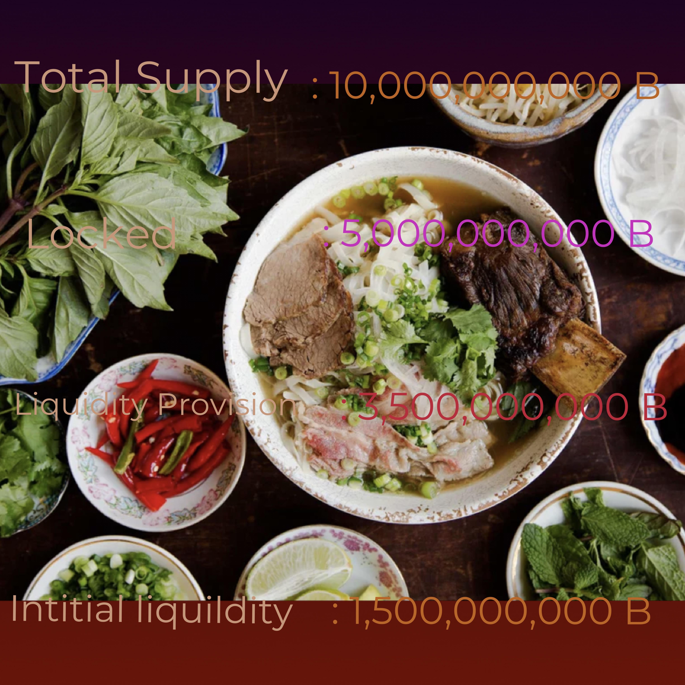

PhoCoin is a transparent, decentralized cryptocurrency with real life use cases that expand into the food industry offering creatives solutions to corporate supply chains and small businesses all over the world.
Contract Address:
Launch
Growth
Expansion
Utility
Pho Coin is built on cryptocurrency “Blockchain” technology that is immutable and non-reversible. These features prevent fraud and back charges on payments. Also The PC transaction ledger is public, dating back to the genesis date. The PC ledger is based on the https://www.bscscan.com website by searching the contract address exactly.
Using the most up to date blockchain technology, transfers and smart contracts can be deployed in seconds. These key features allow users to obtain target funds quickly and creates a more efficient monetary system worldwide.
The Pho Coin source code is publicly available when searching the token address on https://www.bscscan.com and has gone through several security audits prior it's genesis date. More audits will continue to be done as our holder count grows.
Is Not An ICO Token. Is Not An Exchange. PC was released publicly on it’s genesis date where it was immediately available to the world. The Pho Coin is in no way an exchange and generally offers a knowledge base on how to interact with a selected Smart Contract. The knowledge shared can be applied to any Smart Contract and is at the full disposal of the community.
How To Setup The A Secure Pho Coin Wallet
What Is The Official PhoCoin Smart Contract Address?
https://bsc-dataseed.binance.org/